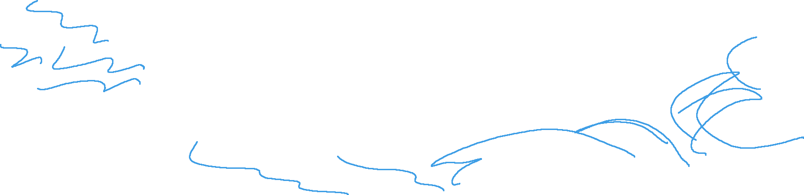
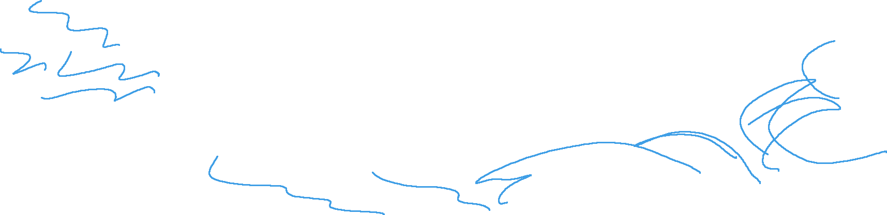

Unraveling the Mysteries of Unsupervised Learning: A Comprehensive Expedition
Introduction:
Supervised learning stands as a cornerstone in the realm of machine learning, embodying a powerful paradigm where algorithms learn to make predictions or decisions by being trained on labeled datasets. In this comprehensive exploration, we will dive into the intricacies of supervised learning, unraveling its key concepts, understanding its applications, and illuminating the path for both beginners and seasoned practitioners.
Understanding Supervised Learning:
The Essence of Supervised Learning:
Supervised learning is a type of machine learning where the algorithm is trained on a labeled dataset, meaning each input is paired with its corresponding output. The goal is for the algorithm to learn the relationship between inputs and outputs, enabling it to make accurate predictions or classifications when presented with new, unseen data.
Components of Supervised Learning:
- Input Data:
- Features or Variables: These are the characteristics or attributes of the data that serve as input to the algorithm.
- Training Data: A labeled dataset comprising pairs of inputs and corresponding outputs used to train the algorithm.
- Output:
- Labels or Target: The desired output or prediction that the algorithm aims to learn from the training data.
- Training Process:
- The algorithm processes the labeled training data, adjusting its internal parameters to minimize the difference between predicted outputs and actual labels.
- Testing and Prediction:
- Once trained, the algorithm is tested on new, unseen data to evaluate its performance. It can then make predictions on fresh inputs.
Types of Supervised Learning:
1. Classification:
Objective: To categorize input data into predefined classes or labels.
Example: Spam detection in emails, sentiment analysis in text.
Algorithm: Common algorithms include logistic regression, decision trees, and support vector machines.
2. Regression:
Objective: To predict a continuous output or numeric value.
Example: Predicting house prices based on features like size and location.
Algorithm: Linear regression, polynomial regression, and decision trees are frequently used.
Key Concepts and Techniques:
Applications of Supervised Learning:
- Medical Diagnosis:
- Predicting disease outcomes based on patient data and medical history.
- Financial Forecasting:
- Predicting stock prices or market trends using historical financial data.
- Image Recognition:
- Classifying images into predefined categories, such as identifying objects in photographs.
- Natural Language Processing (NLP):
- Analyzing and understanding human language, enabling applications like chatbots and language translation.
Challenges and Considerations:
- Data Quality:
- Supervised learning models heavily rely on the quality and representativeness of the training data.
- Bias and Fairness:
- Models can inherit biases present in the training data, leading to unfair predictions.
- Curse of Dimensionality:
- As the number of features increases, the amount of data required for effective training also increases.
Conclusion: Empowering Predictive Insights
Supervised learning serves as a linchpin in machine learning, empowering systems to glean insights, make predictions, and enhance decision-making. As we navigate through the nuances of this paradigm, from understanding its foundational principles to exploring real-world applications, the significance of supervised learning in shaping intelligent systems becomes increasingly evident. Whether you're embarking on your machine learning journey or seeking to deepen your expertise, the realm of supervised learning invites exploration and innovation.
Reference:
Where to next?
- Notes
- Python
- Geographic Analysis
- Machine Learning
- Supervised Learning
- You are here
- Unsupervised Learning
- Reinforcement Learning
 
